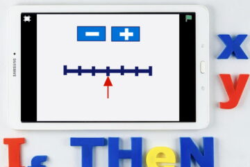
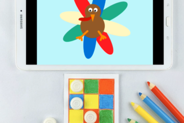
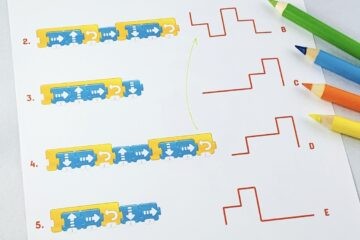
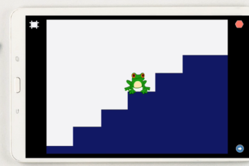

How to share ScratchJr projects (and what if it does not work on Android) ?
How to share ScratchJr projects? It is a common problem that the imported ScratchJr project does not show up. Fortunately, there is a simple workaround that usually helps!
READ MORE

เป็นไปได้ไหมที่จะใช้ตัวแปรใน ScratchJr?
ในโพสต์นี้ คุณจะได้เรียนรู้วิธีการแก้ปัญหาความจริงที่ว่า Scratchjr ไม่ได้มีตัวแปรในตัว เราจะสร้างเคาน์เตอร์ที่แสดงถึงค่าปัจจุบันของมัน และเราจะจำลองคำสั่งตามเงื่อนไขด้วย "ถ้าค่าตัวแปรคือ x ให้ทำบางอย่าง..."
อ่านต่อ..

“Spin that turkey!” The ScratchJr Thanksgiving Bingo game
This Thanksgiving ScratchJr game is a great fun for the whole family! You’ll have a blast creating the spinning turkey animation and then playing the Bingo game!
READ MORE

ScratchJr scripts with loops. A matching game worksheet
A simple matching activity to practice loops in ScratchJr. There are five scripts on a worksheet, each script contains loops. Your pupils’ goal is to connect each script with a relevant route.
READ MORE

Move the frog up the stairs! Loops in ScratchJr
This project is a great introduction to ScratchJr loops and also a good way to practice multiplication and addition. The frog has to perform the same sequence of movements many times, so the easiest way to achieve it is to use loops!
READ MORE